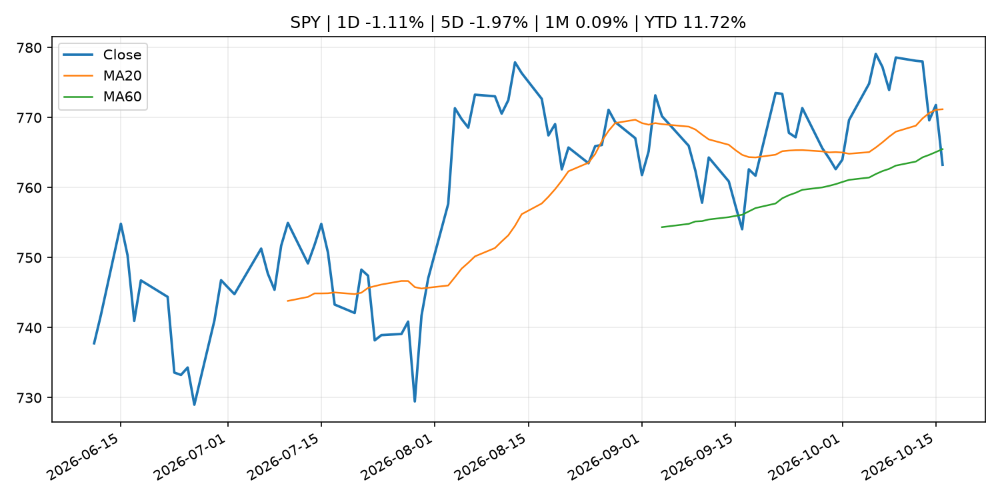
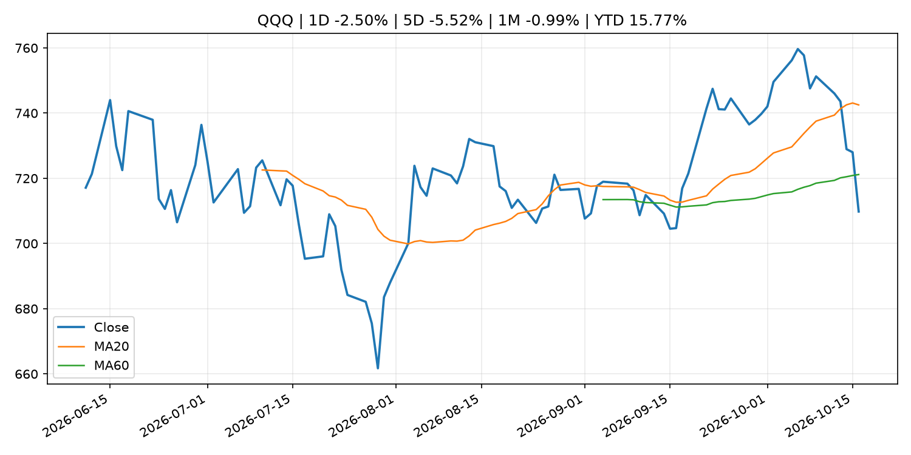
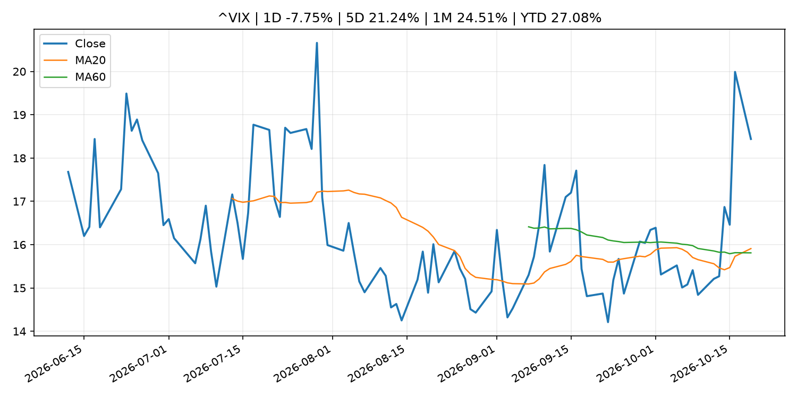
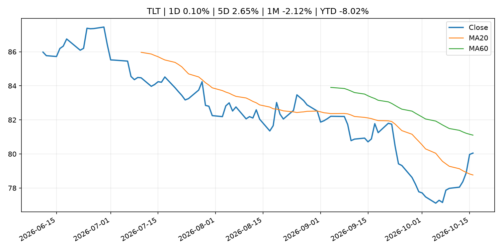
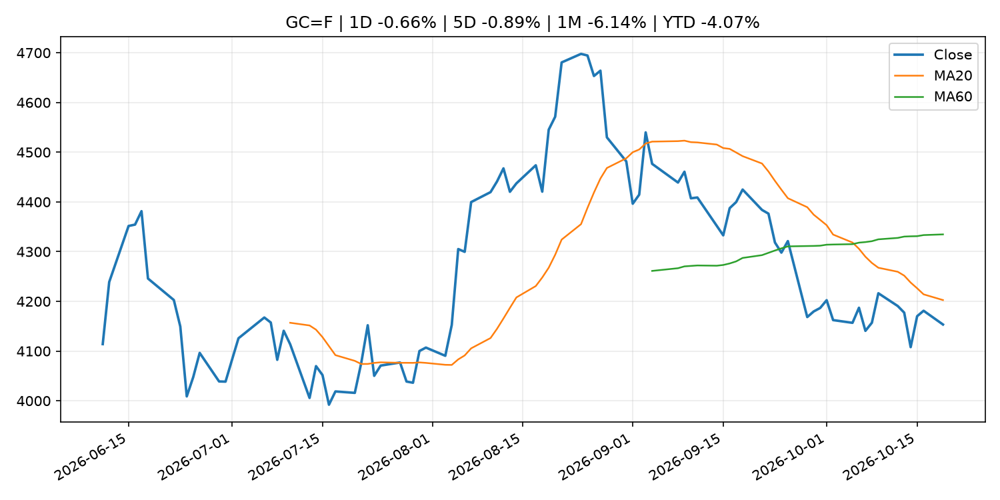
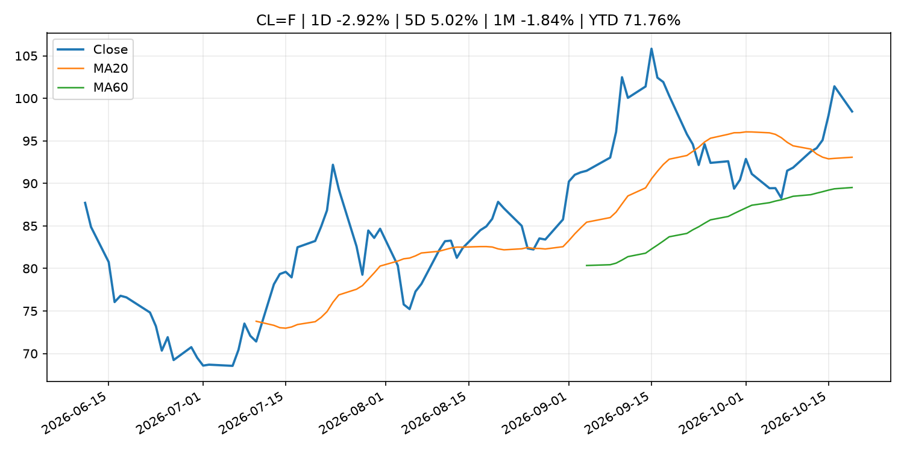
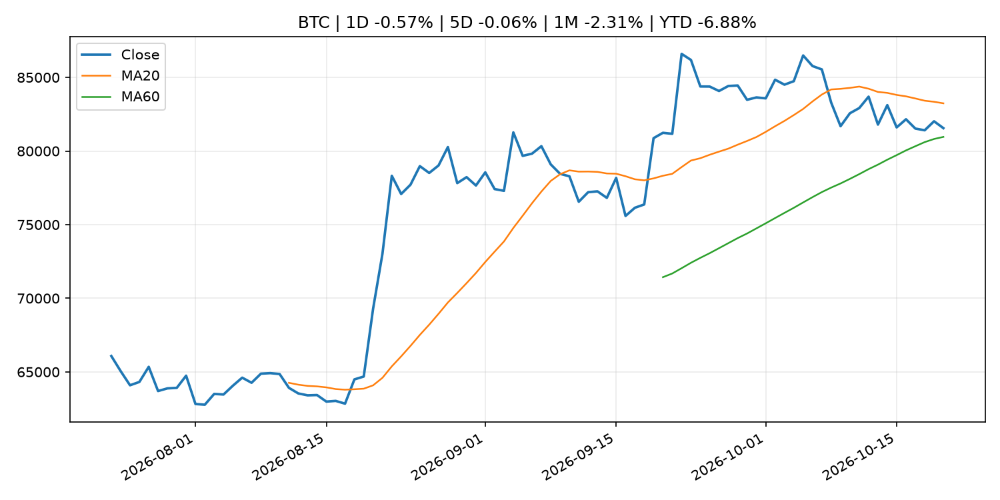
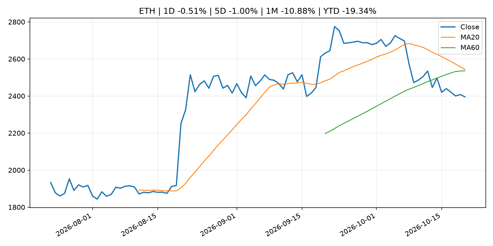
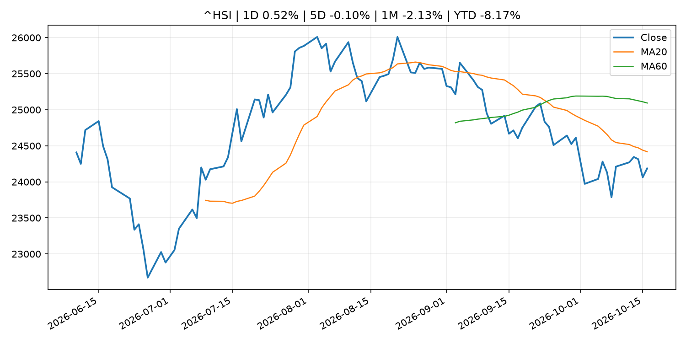

Global Macro Morning Briefing - 2026-10-20
Not financial advice / 非投资建议。
0. 今日总览
- 市场状态：unknown。市场信号不足，暂不判断明确状态。
- 今日三大主线：
- macro_data: Bitcoin, Korea’s Kospi and Nasdaq futures rally as China GDP beats estimates
- earnings: Micron and other chip stocks spring back to life after bruising selloff
- earnings: Bitcoin mining offshoot Nscale loses Microsoft AI deal as power delay stretches into 2030s
- 一句话结论：今日晨报重点关注：这类宏观数据会直接改变市场对通胀、增长和政策路径的预期。；大型科技股盈利和资本开支会影响纳指、半导体和 AI 交易主线。。跨资产方面，SPY 1D -1.11%；QQQ 1D -2.50%；^VIX 1D -7.75%；TLT 1D 0.10%；GC=F 1D -0.66%；CL=F 1D -2.92%；BTC 1D -0.57%；ETH 1D -0.51%；市场信号不足，暂不判断明确状态。政策、通胀、利率、美元、美债、能源和加密监管仍是主要观察线索。所有结论仅基于公开数据与短摘要整理，不构成投资建议。
1. 隔夜跨资产市场
- 美股：SPY 1D -1.11%，QQQ 1D -2.50%，整体趋势需结合 VIX 和利率确认。
- 美债/美元：TLT 1D 0.10%，美元指数 1D 0.08%，是判断折现率压力的核心线索。
- 黄金/原油：黄金 1D -0.66%，原油 1D -2.92%，用于观察避险、通胀和地缘风险。
- 加密：BTC 1D -0.57%，ETH 1D -0.51%，关注是否独立于纳指走出加密自身行情。
- 港股/A股：恒生 1D 0.52%，沪深300/上证 1D n/a，重点看中国政策预期与人民币线索。
- 风险观察：关注后续数据是否确认当前跨资产信号。
US_EQUITY
| symbol | latest close | 1D | 5D | 1M | YTD | trend |
|---|---|---|---|---|---|---|
| SPY | 763.25 | -1.11% | -1.97% | 0.09% | 11.72% | range_bound |
| QQQ | 709.80 | -2.50% | -5.52% | -0.99% | 15.77% | range_bound |
| DIA | 519.10 | -0.40% | 0.58% | 0.14% | 7.33% | range_bound |
| IWM | 270.44 | -1.69% | -3.05% | -5.25% | 8.71% | strong_downtrend |
| VTI | 374.07 | -1.15% | -2.06% | -0.34% | 11.23% | range_bound |
US_MACRO_MARKET
| symbol | latest close | 1D | 5D | 1M | YTD | trend |
|---|---|---|---|---|---|---|
| ^VIX | 18.44 | -7.75% | 21.24% | 24.51% | 27.08% | strong_uptrend |
| DX-Y.NYB | 101.92 | 0.08% | -0.64% | 1.70% | 3.56% | uptrend |
| TLT | 80.05 | 0.10% | 2.65% | -2.12% | -8.02% | range_bound |
| IEF | 90.42 | 0.08% | 1.14% | -0.91% | -5.89% | range_bound |
COMMODITIES
| symbol | latest close | 1D | 5D | 1M | YTD | trend |
|---|---|---|---|---|---|---|
| GC=F | 4,153.40 | -0.66% | -0.89% | -6.14% | -4.07% | downtrend |
| SI=F | 57.06 | 0.11% | -5.13% | -14.28% | -19.14% | strong_downtrend |
| CL=F | 98.45 | -2.92% | 5.02% | -1.84% | 71.76% | uptrend |
| BZ=F | 109.43 | -0.39% | 2.61% | 5.35% | 80.13% | strong_uptrend |
| NG=F | 3.02 | -3.05% | -4.61% | 3.74% | -16.50% | range_bound |
| HG=F | 6.57 | 0.52% | -1.99% | -0.76% | 16.40% | range_bound |
HK_MARKET
| symbol | latest close | 1D | 5D | 1M | YTD | trend |
|---|---|---|---|---|---|---|
| ^HSI | 24,186.83 | 0.52% | -0.10% | -2.13% | -8.17% | downtrend |
| 0700.HK | 417.80 | 0.00% | -1.65% | -3.60% | -32.94% | strong_downtrend |
| 9988.HK | 108.80 | 2.26% | 1.68% | 2.45% | -26.98% | range_bound |
| 3690.HK | 75.70 | 0.33% | 5.87% | 1.68% | -27.63% | range_bound |
| 1810.HK | 26.66 | -1.55% | 2.70% | 1.83% | -33.81% | range_bound |
| 1211.HK | 73.75 | 1.10% | -2.45% | -6.88% | -25.32% | strong_downtrend |
CRYPTO
| symbol | latest close | 1D | 5D | 1M | YTD | trend |
|---|---|---|---|---|---|---|
| BTC | 81,553.25 | -0.57% | -0.06% | -2.31% | -6.88% | range_bound |
| ETH | 2,395.60 | -0.51% | -1.00% | -10.88% | -19.34% | range_bound |
| SOLANA | 104.58 | 0.56% | 0.37% | -11.98% | -16.01% | range_bound |
| BINANCECOIN | 727.89 | 0.72% | -0.27% | -4.69% | -15.63% | range_bound |
| RIPPLE | 1.30 | -0.72% | -2.58% | -13.34% | -29.57% | strong_downtrend |
2. 今日最重要的 10 条新闻
1. Bitcoin, Korea’s Kospi and Nasdaq futures rally as China GDP beats estimates
- 来源：CoinDesk
- 时间：2026-10-19T03:36:58+00:00
- 地区：global
- 事件类型：macro_data
- 重要性层级：Tier 1
- 一句话摘要：Bitcoin, Korea’s Kospi and Nasdaq futures rally as China GDP beats estimates
- 为什么重要：这类宏观数据会直接改变市场对通胀、增长和政策路径的预期。
- 可能影响：可能影响利率、汇率、风险资产或大宗商品预期，但当前公开信息不足以判断明确方向。
- 资产：暂无明确资产映射
- 方向：unknown
- 强度：low
- 原因：公开信息不足以判断方向。
- 原文链接：https://www.coindesk.com/markets/2026/10/19/bitcoin-korea-s-kospi-and-nasdaq-futures-rally-as-china-gdp-beats-estimates
2. Micron and other chip stocks spring back to life after bruising selloff
- 来源：MarketWatch Top Stories
- 时间：2026-10-19T21:06:00+00:00
- 地区：US
- 事件类型：earnings
- 重要性层级：Tier 2
- 一句话摘要：It’s a key week for tech stocks as Nvidia gears up for a European conference and Meta prepares to report earnings.
- 为什么重要：大型科技股盈利和资本开支会影响纳指、半导体和 AI 交易主线。
- 可能影响：主要影响 QQQ，方向为 mixed，强度 high；AI 资本开支会影响大型科技股盈利和估值预期。
- 资产：QQQ 方向：mixed 强度：high 原因：AI 资本开支会影响大型科技股盈利和估值预期。
- 资产：SMH 方向：mixed 强度：high 原因：AI 投资周期直接影响半导体需求。
- 资产：NVDA 方向：mixed 强度：high 原因：AI 训练和推理需求是英伟达收入预期核心变量。
- 资产：MSFT 方向：mixed 强度：medium 原因：云和 AI 资本开支影响利润率与增长叙事。
- 资产：GOOGL 方向：mixed 强度：medium 原因：AI 投资和搜索商业化影响估值。
- 资产：META 方向：mixed 强度：medium 原因：AI 基建支出与广告效率共同影响市场预期。
- 原文链接：https://www.marketwatch.com/story/micron-and-other-chip-stocks-spring-back-to-life-after-bruising-selloff-16486541?mod=mw_rss_topstories
3. Bitcoin mining offshoot Nscale loses Microsoft AI deal as power delay stretches into 2030s
- 来源：CoinDesk
- 时间：2026-10-19T09:15:00+00:00
- 地区：global
- 事件类型：earnings
- 重要性层级：Tier 2
- 一句话摘要：Bitcoin mining offshoot Nscale loses Microsoft AI deal as power delay stretches into 2030s
- 为什么重要：大型科技股盈利和资本开支会影响纳指、半导体和 AI 交易主线。
- 可能影响：主要影响 QQQ，方向为 mixed，强度 high；AI 资本开支会影响大型科技股盈利和估值预期。
- 资产：QQQ 方向：mixed 强度：high 原因：AI 资本开支会影响大型科技股盈利和估值预期。
- 资产：SMH 方向：mixed 强度：high 原因：AI 投资周期直接影响半导体需求。
- 资产：NVDA 方向：mixed 强度：high 原因：AI 训练和推理需求是英伟达收入预期核心变量。
- 资产：MSFT 方向：mixed 强度：medium 原因：云和 AI 资本开支影响利润率与增长叙事。
- 资产：GOOGL 方向：mixed 强度：medium 原因：AI 投资和搜索商业化影响估值。
- 资产：META 方向：mixed 强度：medium 原因：AI 基建支出与广告效率共同影响市场预期。
- 原文链接：https://www.coindesk.com/tech/2026/10/19/bitcoin-mining-offshoot-nscale-loses-microsoft-ai-deal-as-power-delay-stretches-into-2030s
4. SEC Announces Roundtable on Machine-Understandable Data in the Age of Super Intelligence
- 来源：SEC Press Releases
- 时间：2026-10-19T13:19:43-04:00
- 地区：US
- 事件类型：regulation
- 重要性层级：Tier 2
- 一句话摘要：The Securities and Exchange Commission announced today that it will host a roundtable on November 9, 2026, to discuss the use of machine-understandable data and Super Intelligence (SI) and related risks and costs.“In the age of SI, high-quality…
- 为什么重要：监管变化会改变行业盈利预期和资产风险溢价。
- 可能影响：主要影响 BTC，方向为 mixed，强度 high；加密监管或 ETF 进展会改变 BTC 的资金流和风险溢价。
- 资产：BTC 方向：mixed 强度：high 原因：加密监管或 ETF 进展会改变 BTC 的资金流和风险溢价。
- 资产：ETH 方向：mixed 强度：high 原因：监管框架会影响 ETH 产品化和机构参与度。
- 资产：COIN 方向：mixed 强度：medium 原因：监管清晰度和执法风险会影响交易平台估值。
- 资产：crypto market 方向：mixed 强度：high 原因：信息影响整个加密市场结构，但方向取决于细节。
- 原文链接：https://www.sec.gov/newsroom/press-releases/2026-106-sec-announces-roundtable-machine-understandable-data-age-super-intelligence
5. SEC tokenized stock framework faces issuer pushback as Broadcom, Verizon object to OKX-ICE listing
- 来源：CoinDesk
- 时间：2026-10-18T23:28:06+00:00
- 地区：global
- 事件类型：regulation
- 重要性层级：Tier 2
- 一句话摘要：SEC tokenized stock framework faces issuer pushback as Broadcom, Verizon object to OKX-ICE listing
- 为什么重要：监管变化会改变行业盈利预期和资产风险溢价。
- 可能影响：主要影响 BTC，方向为 mixed，强度 high；加密监管或 ETF 进展会改变 BTC 的资金流和风险溢价。
- 资产：BTC 方向：mixed 强度：high 原因：加密监管或 ETF 进展会改变 BTC 的资金流和风险溢价。
- 资产：ETH 方向：mixed 强度：high 原因：监管框架会影响 ETH 产品化和机构参与度。
- 资产：COIN 方向：mixed 强度：medium 原因：监管清晰度和执法风险会影响交易平台估值。
- 资产：crypto market 方向：mixed 强度：high 原因：信息影响整个加密市场结构，但方向取决于细节。
- 原文链接：https://www.coindesk.com/business/2026/10/18/sec-tokenized-stock-framework-faces-issuer-pushback-as-broadcom-verizon-object-to-okx-ice-listing
6. Stablecoin supply stalls, but payments jump 45% as Visa, Mastercard and Stripe connect crypto to cash
- 来源：CoinDesk
- 时间：2026-10-18T14:00:00+00:00
- 地区：global
- 事件类型：crypto_market_structure
- 重要性层级：Tier 2
- 一句话摘要：Stablecoin supply stalls, but payments jump 45% as Visa, Mastercard and Stripe connect crypto to cash
- 为什么重要：加密市场结构和监管变化会影响 BTC、ETH 及相关股票的风险溢价。
- 可能影响：主要影响 BTC，方向为 mixed，强度 high；加密监管或 ETF 进展会改变 BTC 的资金流和风险溢价。
- 资产：BTC 方向：mixed 强度：high 原因：加密监管或 ETF 进展会改变 BTC 的资金流和风险溢价。
- 资产：ETH 方向：mixed 强度：high 原因：监管框架会影响 ETH 产品化和机构参与度。
- 资产：COIN 方向：mixed 强度：medium 原因：监管清晰度和执法风险会影响交易平台估值。
- 资产：crypto market 方向：mixed 强度：high 原因：信息影响整个加密市场结构，但方向取决于细节。
- 原文链接：https://www.coindesk.com/business/2026/10/18/stablecoin-supply-stalls-but-payments-jump-45-as-visa-mastercard-and-stripe-connect-crypto-to-cash
7. SpaceX earnings will be all about AI — for better or for worse
- 来源：MarketWatch Top Stories
- 时间：2026-10-19T21:02:00+00:00
- 地区：US
- 事件类型：earnings
- 重要性层级：Tier 2
- 一句话摘要：SpaceX has been renting out access to computing power, which is a big source of revenue growth but also one that comes at a high cost.
- 为什么重要：大型科技股盈利和资本开支会影响纳指、半导体和 AI 交易主线。
- 可能影响：可能影响利率、汇率、风险资产或大宗商品预期，但当前公开信息不足以判断明确方向。
- 资产：暂无明确资产映射
- 方向：unknown
- 强度：low
- 原因：公开信息不足以判断方向。
- 原文链接：https://www.marketwatch.com/story/spacex-earnings-will-be-all-about-ai-for-better-or-for-worse-89bbc772?mod=mw_rss_topstories
8. Bitcoin’s $100,000 year-end hope divides analysts as inflation clouds outlook
- 来源：CoinDesk
- 时间：2026-10-18T13:00:00+00:00
- 地区：global
- 事件类型：other
- 重要性层级：Tier 3
- 一句话摘要：Bitcoin’s $100,000 year-end hope divides analysts as inflation clouds outlook
- 为什么重要：这条信息暂未匹配到重大宏观、政策或市场事件，更适合作为背景跟踪。
- 可能影响：主要影响 DXY，方向为 positive，强度 high；通胀压力可能推高政策利率预期并支撑美元。
- 资产：DXY 方向：positive 强度：high 原因：通胀压力可能推高政策利率预期并支撑美元。
- 资产：TLT 方向：negative 强度：high 原因：通胀上行通常推升收益率、压低长债价格。
- 资产：QQQ 方向：negative 强度：high 原因：更高利率对成长股估值折现率不利。
- 资产：SPY 方向：mixed 强度：medium 原因：名义增长可能支撑收入，但更高利率压制估值。
- 资产：GC=F 方向：mixed 强度：medium 原因：通胀对黄金是支撑，但实际利率上行会形成压力。
- 资产：BTC 方向：mixed 强度：medium 原因：抗通胀叙事和流动性收紧可能相互抵消。
- 原文链接：https://www.coindesk.com/markets/2026/10/18/bitcoin-s-usd100-000-year-end-hope-divides-analysts-as-inflation-clouds-outlook
9. Frank Elderson: From climate and nature risks to economic resilience and competitiveness
- 来源：ECB Press Releases
- 时间：2026-10-19T08:00:00+02:00
- 地区：EU
- 事件类型：other
- 重要性层级：Tier 3
- 一句话摘要：Frank Elderson: From climate and nature risks to economic resilience and competitiveness
- 为什么重要：这条信息暂未匹配到重大宏观、政策或市场事件，更适合作为背景跟踪。
- 可能影响：更偏背景信息，短期市场影响可能有限。
- 资产：暂无明确资产映射
- 方向：unknown
- 强度：low
- 原因：公开信息不足以判断方向。
- 原文链接：https://www.ecb.europa.eu//press/key/date/2026/html/ecb.sp261019~f0a3e053de.en.html
3. 政策与央行观察
1. SEC Announces Roundtable on Machine-Understandable Data in the Age of Super Intelligence
- 来源：SEC Press Releases
- 时间：2026-10-19T13:19:43-04:00
- 地区：US
- 事件类型：regulation
- 重要性层级：Tier 2
- 一句话摘要：The Securities and Exchange Commission announced today that it will host a roundtable on November 9, 2026, to discuss the use of machine-understandable data and Super Intelligence (SI) and related risks and costs.“In the age of SI, high-quality…
- 为什么重要：监管变化会改变行业盈利预期和资产风险溢价。
- 可能影响：主要影响 BTC，方向为 mixed，强度 high；加密监管或 ETF 进展会改变 BTC 的资金流和风险溢价。
- 资产：BTC 方向：mixed 强度：high 原因：加密监管或 ETF 进展会改变 BTC 的资金流和风险溢价。
- 资产：ETH 方向：mixed 强度：high 原因：监管框架会影响 ETH 产品化和机构参与度。
- 资产：COIN 方向：mixed 强度：medium 原因：监管清晰度和执法风险会影响交易平台估值。
- 资产：crypto market 方向：mixed 强度：high 原因：信息影响整个加密市场结构，但方向取决于细节。
- 原文链接：https://www.sec.gov/newsroom/press-releases/2026-106-sec-announces-roundtable-machine-understandable-data-age-super-intelligence
2. SEC tokenized stock framework faces issuer pushback as Broadcom, Verizon object to OKX-ICE listing
- 来源：CoinDesk
- 时间：2026-10-18T23:28:06+00:00
- 地区：global
- 事件类型：regulation
- 重要性层级：Tier 2
- 一句话摘要：SEC tokenized stock framework faces issuer pushback as Broadcom, Verizon object to OKX-ICE listing
- 为什么重要：监管变化会改变行业盈利预期和资产风险溢价。
- 可能影响：主要影响 BTC，方向为 mixed，强度 high；加密监管或 ETF 进展会改变 BTC 的资金流和风险溢价。
- 资产：BTC 方向：mixed 强度：high 原因：加密监管或 ETF 进展会改变 BTC 的资金流和风险溢价。
- 资产：ETH 方向：mixed 强度：high 原因：监管框架会影响 ETH 产品化和机构参与度。
- 资产：COIN 方向：mixed 强度：medium 原因：监管清晰度和执法风险会影响交易平台估值。
- 资产：crypto market 方向：mixed 强度：high 原因：信息影响整个加密市场结构，但方向取决于细节。
- 原文链接：https://www.coindesk.com/business/2026/10/18/sec-tokenized-stock-framework-faces-issuer-pushback-as-broadcom-verizon-object-to-okx-ice-listing
3. Stablecoin supply stalls, but payments jump 45% as Visa, Mastercard and Stripe connect crypto to cash
- 来源：CoinDesk
- 时间：2026-10-18T14:00:00+00:00
- 地区：global
- 事件类型：crypto_market_structure
- 重要性层级：Tier 2
- 一句话摘要：Stablecoin supply stalls, but payments jump 45% as Visa, Mastercard and Stripe connect crypto to cash
- 为什么重要：加密市场结构和监管变化会影响 BTC、ETH 及相关股票的风险溢价。
- 可能影响：主要影响 BTC，方向为 mixed，强度 high；加密监管或 ETF 进展会改变 BTC 的资金流和风险溢价。
- 资产：BTC 方向：mixed 强度：high 原因：加密监管或 ETF 进展会改变 BTC 的资金流和风险溢价。
- 资产：ETH 方向：mixed 强度：high 原因：监管框架会影响 ETH 产品化和机构参与度。
- 资产：COIN 方向：mixed 强度：medium 原因：监管清晰度和执法风险会影响交易平台估值。
- 资产：crypto market 方向：mixed 强度：high 原因：信息影响整个加密市场结构，但方向取决于细节。
- 原文链接：https://www.coindesk.com/business/2026/10/18/stablecoin-supply-stalls-but-payments-jump-45-as-visa-mastercard-and-stripe-connect-crypto-to-cash
4. 市场异动与图表
- SPY 下跌 -1.11%
- QQQ 下跌 -2.50%
- VIX 下跌 -7.75%
- Gold 下跌 -0.66%
- Oil 下跌 -2.92%
SPY

QQQ

^VIX

TLT

GC=F

CL=F

BTC

ETH

^HSI

5. 华尔街与机构公开观点
- 暂无可靠公开观点。
6. 今日重点关注
- 经济数据：经济数据：暂无可靠公开日历数据；如配置经济日历源后可自动填充。
- 央行讲话：央行讲话：暂无可靠公开日历数据；重点跟踪 Fed、ECB、BoJ、PBOC 官网 RSS。
- 财报：财报：暂无可靠数据。
- 政策事件：政策事件：暂无可靠数据。
- 风险提醒：风险提醒：关注数据源失败项、突发地缘风险、利率和美元的二阶反应。
7. 英文金融表达与宏观概念
- inflation expectations：通胀预期，指家庭、企业或市场对未来通胀的预估。 例句：Inflation expectations can shape wage bargaining and bond yields.
- real yield：实际收益率，名义利率扣除通胀预期后的收益率。 例句：Gold often reacts more to real yields than nominal yields.
- soft landing：软着陆，指通胀回落而经济避免明显衰退。 例句：Markets often rally when data support a soft landing.
- market structure：市场结构，指交易、托管、清算、ETF、监管等制度安排。 例句：Crypto market structure rules can affect institutional participation.
- AI capex：AI 资本开支，指云厂商和科技公司投入 AI 基建的支出。 例句：AI capex guidance can move semiconductor stocks.
- terminal rate：终端利率，市场预期本轮加息周期的最高政策利率。 例句：A higher terminal rate can pressure growth stocks.
8. 背景材料
- Retiring abroad? Don’t cut these financial ties to the U.S.（MarketWatch Top Stories，routine_announcement）：Think carefully about your Social Security, Medicare, credit cards and bank accounts before picking your new home overseas.
- Strategy's price chart is about to flash a major bullish signal weeks after bitcoin did（CoinDesk，other）：Strategy's price chart is about to flash a major bullish signal weeks after bitcoin did
- Live updates: Bitcoin holds near $82,000 as Nasdaq rebounds more than 1%（CoinDesk，other）：Live updates: Bitcoin holds near $82,000 as Nasdaq rebounds more than 1%
- Bitcoin extends bounce above $82,000 as stocks rebound, DeFi tokens lead altcoin gains（CoinDesk，other）：Bitcoin extends bounce above $82,000 as stocks rebound, DeFi tokens lead altcoin gains
- CME’s bitcoin cash, uniswap futures, global PMIs: Crypto Week Ahead（CoinDesk，other）：CME’s bitcoin cash, uniswap futures, global PMIs: Crypto Week Ahead
- Bitcoin whale moves $34 million in BTC it got in 2013 when coins traded at $131（CoinDesk，other）：Bitcoin whale moves $34 million in BTC it got in 2013 when coins traded at $131
- Frank Elderson: From climate and nature risks to economic resilience and competitiveness（ECB Press Releases，other）：Frank Elderson: From climate and nature risks to economic resilience and competitiveness
- Wall Street freaked out Friday, but VIX and bitcoin trades say the fear may fade Monday.（CoinDesk，other）：Wall Street freaked out Friday, but VIX and bitcoin trades say the fear may fade Monday.
- Bitcoin’s $100,000 year-end hope divides analysts as inflation clouds outlook（CoinDesk，other）：Bitcoin’s $100,000 year-end hope divides analysts as inflation clouds outlook
- Crypto audits give investors false sense of security as Q3 hacks cost $1.18 billion, Hacken says（CoinDesk，other）：Crypto audits give investors false sense of security as Q3 hacks cost $1.18 billion, Hacken says
9. 数据源、失败项与免责声明
- 采集时间：2026-10-20T00:56:25
- 数据源：公开 RSS、Yahoo Finance、CoinGecko、AKShare、FRED、SEC data.sec.gov，以及用户自有 inputs/reports 文件。
- 合规说明：不绕过 WSJ、Bloomberg、FT、Reuters 等付费墙；对付费媒体只使用公开 RSS 标题、摘要、链接和发布时间。
- 免责声明：Not financial advice / 非投资建议。本项目仅供个人学习、研究和信息整理，不构成投资建议、交易建议或任何收益承诺。
- 失败或跳过的数据源：
- crypto data failed coin=dogecoin
- China market data failed symbol=上证指数: empty dataframe
- China market data failed symbol=深证成指: empty dataframe
- China market data failed symbol=创业板指: empty dataframe
- China market data failed symbol=沪深300: empty dataframe
- China market data failed symbol=中证500: empty dataframe
- China market data failed symbol=科创50: empty dataframe
- FRED_API_KEY not set; skipping FRED macro series
- SEC failed cik=0000320193
- SEC failed cik=0000789019
- SEC failed cik=0001045810
- SEC failed cik=0001318605
- SEC failed cik=0001577552